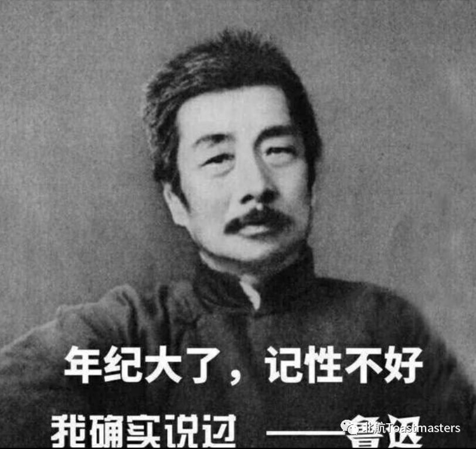
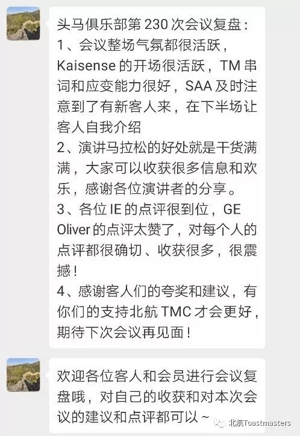
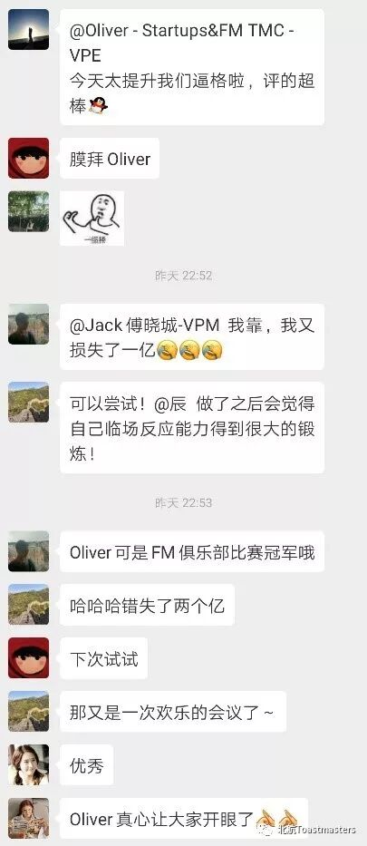
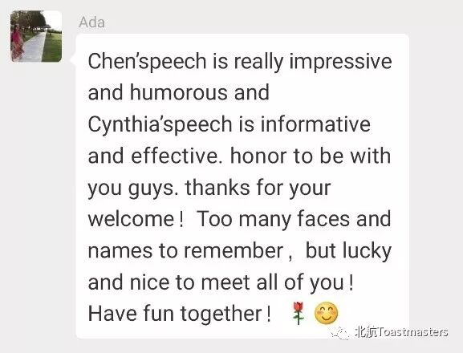
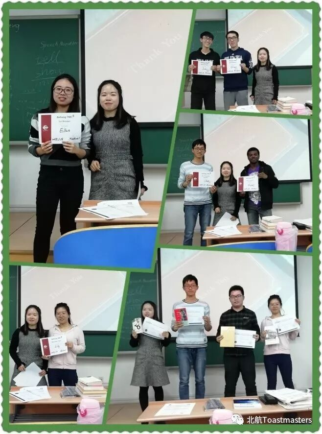

错过北航头马会议，跑再多的马拉松也追不回来。
----鲁迅
生命在于北航头马

|
会后，ABCDEFGH的Cynthia为我们做了复盘，什么你们不知道ABCDEFGH是什么意思，一看就知道昨晚没来头马，当然是Adorable, beautiful, cute, delightful, elegant, fashionable, gorgeous, and hot啦！错过会议的小伙伴，这次真是便宜你们了。

看完复盘，你肯定会想问Oliver何许人也，话不多说，甩视频！
大家收好自己的膝盖吧，Oliver不缺男朋友啦！会议结束许久，大家的心也久久未能平复，毕竟遇上此等大神真的是幸运啊。

新人Ada也是对此次会议作出了高度的评价，并且加入北航头马俱乐部。小编真的好想再补充一句，第一次不来是你的错，第二次不来是我的错。

幽默Chen的演讲在给我们带来满满的干货同时，又给我们带来了欢笑，那么他到底讲了什么呢？继续甩视频！
最后附上获奖的小伙伴的美照！

最后的最后，附上我们这个大家庭——中国头马地图
=========
D88大区
覆盖城市：北京、天津、西安、哈尔滨、石家庄、郑州、长春、连云港、大连、沈阳、济南、临沂、烟台、青岛、太原
拜访地图：http://dwz.cn/Sh15zUzZ
D85大区
覆盖城市：上海、苏州、无锡、常州、南通、南京、武汉、扬州、徐州、长沙、南昌、杭州、宁波、温州、台州、奉化、义乌
拜访地图: http://dwz.cn/vp6bo7Uc
D89大区
覆盖城市：香港、厦门、成都、重庆、深圳、东莞、惠州、南宁、广州、佛山、茂名、珠海、中山
拜访地图：
深圳、东莞、惠州、南宁 http://dwz.cn/JiAUwM4O
广州、佛山、茂名、珠海、中山、阳江 http://dwz.cn/3xUY3E1H
对演讲感兴趣的小伙伴，还在犹豫什么呢？不在北京也没有关系，选择自己的城市，踏上一条不归路吧！
一入头马门，从此一家人！
欢迎加入我们这个大集体！

视频|Kaiyuan
照片|Cynthia&Yang
文案|Yang
https://mp.weixin.qq.com/s/tSKNSnIzC4HiVyTRsCUPEA
本页为抢救式本地归档，图文已永久保存。